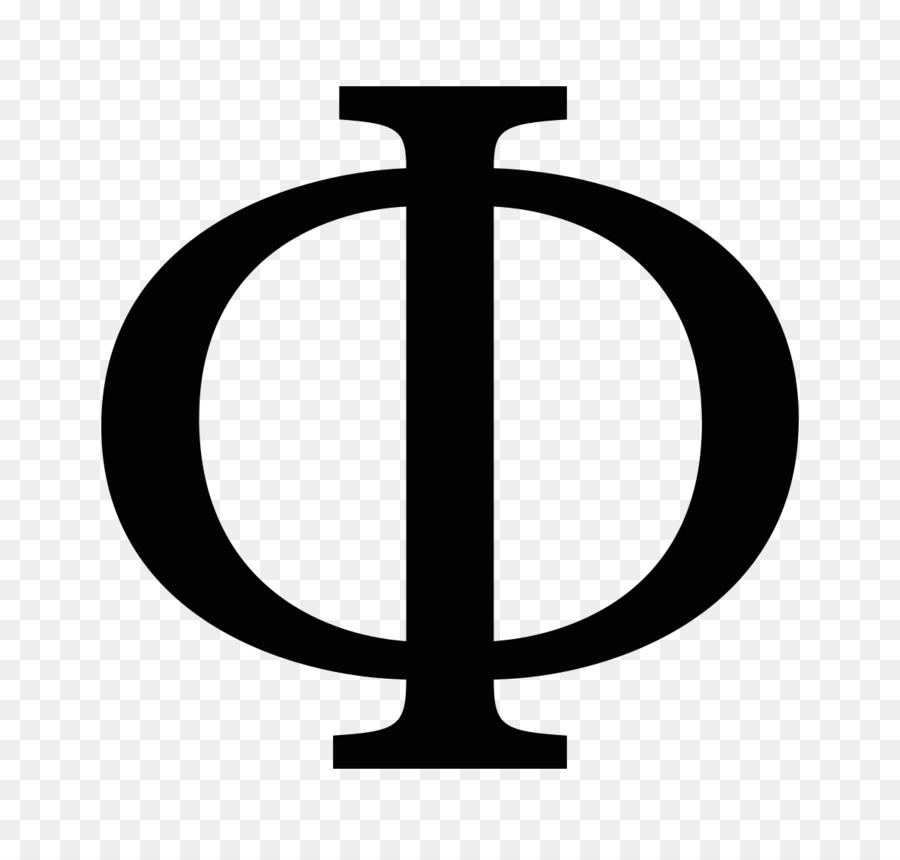

|  | Home || Quem somos || Contato |
Sobre o sitePalavras relacionadas a cor de ouro: lourejo, amarelidão, amarelo, amarelidez, cor baça, alambre, cor de mel, ouro, açafrão, ocre, ocra, icterícia, súcino. Baixe fotos de Cor de ouro no enorme banco de imagens ✓ Milhões de fotos ✓ Imagens, ilustrações livres de royalties de alta qualidade a preços acessíveis. |
|
Todos os direitos reservados |
|